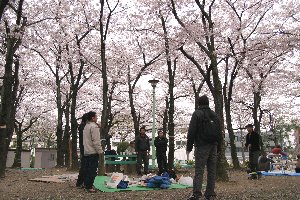
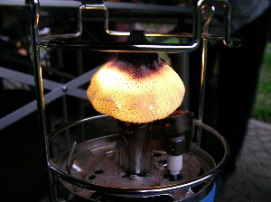
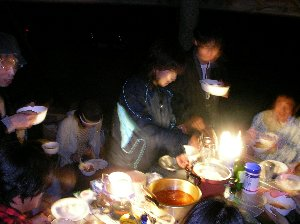
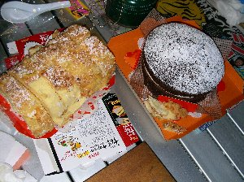

花見＆夕食会 | 2006年４月（幹事：きっかー） |
|---|---|
| 《花見》 恒例の「しふとべる」花見を、今年も静岡駅南の公園にて開催。 今年も開花時期にバッチリ当たって、良いお花見となりました。 例年のごとく、場所取りも兼ねた昼からの部には、なぜか予定人数が集まらず、私が行った2時頃には、シュガーが一人で、シュラフに包まってお留守番している有様でした。 私とmaxが加わり、3人で飲んでいたところ、たかにぃ、波平さんらが訪れて、だいぶ賑やかになって行き、夕方頃にはドンドン人数が増えて、一枚だったシートが二枚になり、ランタンを灯す用意をして、食べ物も増えていきました。 私は所要の為、夕方6時でやむなく帰りましたが、その後も宴はヒートアップして、夜中の12時まで続いたようです。 （ご近所の皆様、ごめんなさい。でも、まだやっているグループ有りました。さすがに12時過ぎは不味いでしょう） 聴いた話によると、料理も食べきれなく有り、話題は尽きず、満開の桜の下でだいぶ盛り上がったようです。 | |
 一人お留守番（寝袋にて） |  上はサクラだらけ |
| 《夕食会》 ＧＷの初日に、何かやろう！ と言うことになり、夕方から小さな公園（？）にて、夕食会をすることになりました。 さて、夕食会とは？ 簡単に言えば、皆で料理を作って食べる。です。(*^。^*) 野外で。が付くのが「しふとべる」ならではですかね。 夕方4時に買出し班が集まりスーパーにお買い物。メニューは決まっていない。 キッカーが携帯に数種類のレシピを忍ばせていて、トマト何とかシチュー（名前忘れました。以下シチュー）に決定。 | |
 夕食会場（笑） |  本日のメイン。トマト何とかシチュー |
| 買い物を終えて、いざ会場となる公園に。ここは以前もバーベキューの避難場所として使った事が有り、安倍川のバイパスから程近く、人家からは離れていて、小さな東屋とトイレが有るので、とても便利です。（トイレに照明が有ると、もっと良いのだが。あとテーブルと） 程なく人が集まりだし、調理開始。肉、玉ねぎ、人参、ニンニクを切り、炒め、トマトホールで煮込みます。今回はご飯も炊きました。 ご飯が出来るまでに、ちょっと一杯引っ掛けながら、（波平さんワイン有難うです）、煮込みを待ちます。 キッカーが友人を迎えに行き、アル兄が自宅から自転車で来ると、総勢11名の大所帯。 暗くなってランタンに火が入る頃、料理の完成です。 これは美味しかった。皆、むさぼる様に食べてました。私はご飯の上からシチューを掛けたら、こりゃまたリゾット風で美味しい〜 | |
|  点き始めのランタン ランタンの明かりって良いよね |  お〜シチューの売れ行きは良いですね |
| このあと、キッカーがスモークチーズを作り、ケーキの登場です。このケーキも美味しかった〜 夕食会は夜の10時位まで続きました。 楽しくお喋り出来て、美味しくて、みんな喜んでくれたようで満足ですね。 | |
 ゴキュゴキュ飲んでる人が居ます♪幸せそう |  二種類のケーキ☆ |
| 写真＆コメント ｂｙ べっしー | |